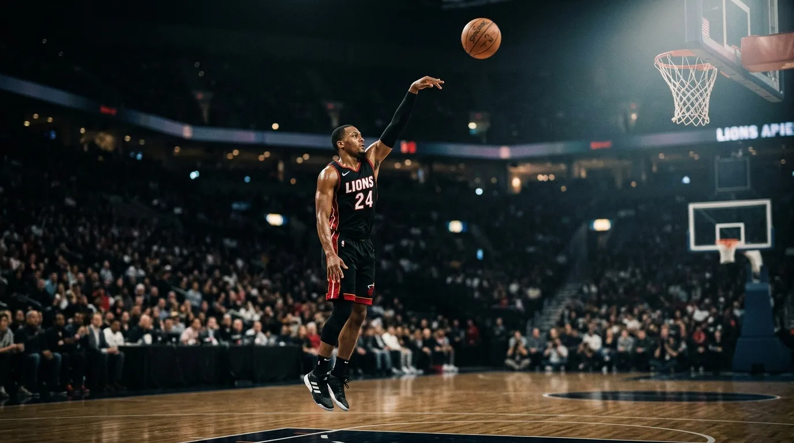

Assurance 02 / accessibility
Accessible Court Interface
Keyboard, focus, contrast, motion, semantics, and assistive-technology requirements for the complete experience.

- Target
- WCAG 2.2 AA
- Input
- Keyboard ready
- Motion
- User controlled
- Review
- Human tested
Define the decision before implementation
Accessibility is part of the interaction contract, not a final visual pass. Navigation, filters, sliders, forms, and detail pages must remain understandable without a pointer.
Automated checks help, but final conformance requires representative keyboard, screen-reader, zoom, contrast, and reduced-motion testing.
This brief is planning guidance. Production commitments require named owners, approved controls, and test evidence.
Evidence required to proceed
- Verify the semantic reading order.
- Complete every flow with a keyboard.
- Test zoom, contrast, and reduced motion.
- Resolve findings with user impact first.